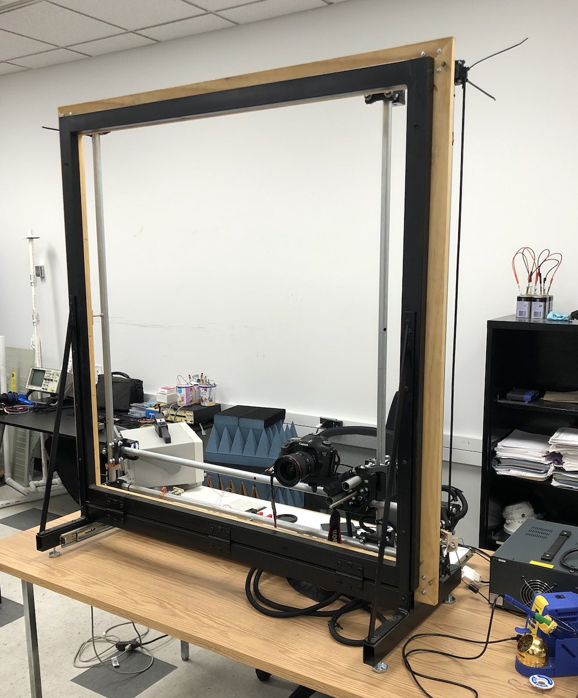
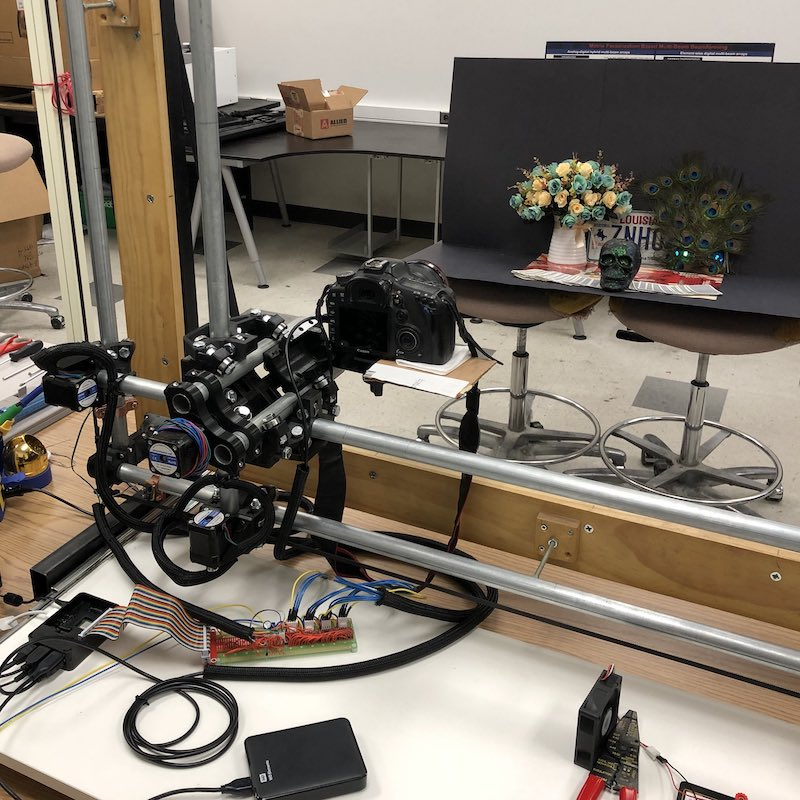
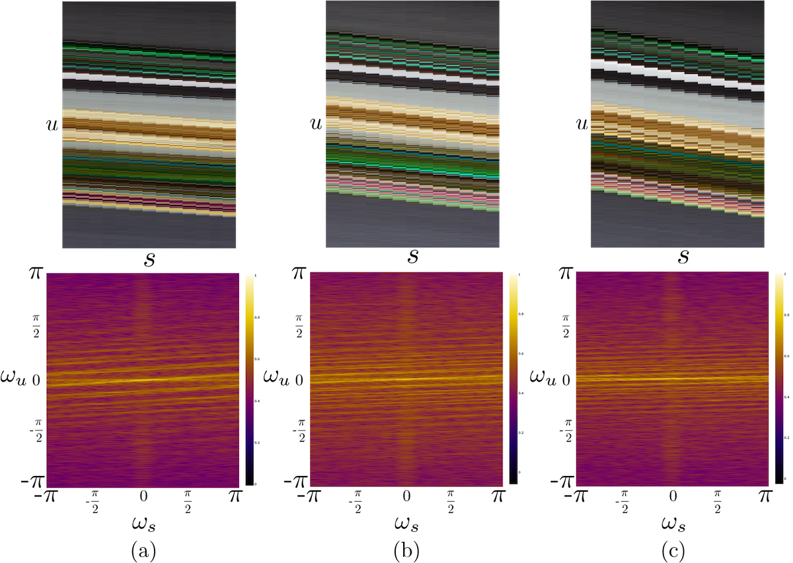
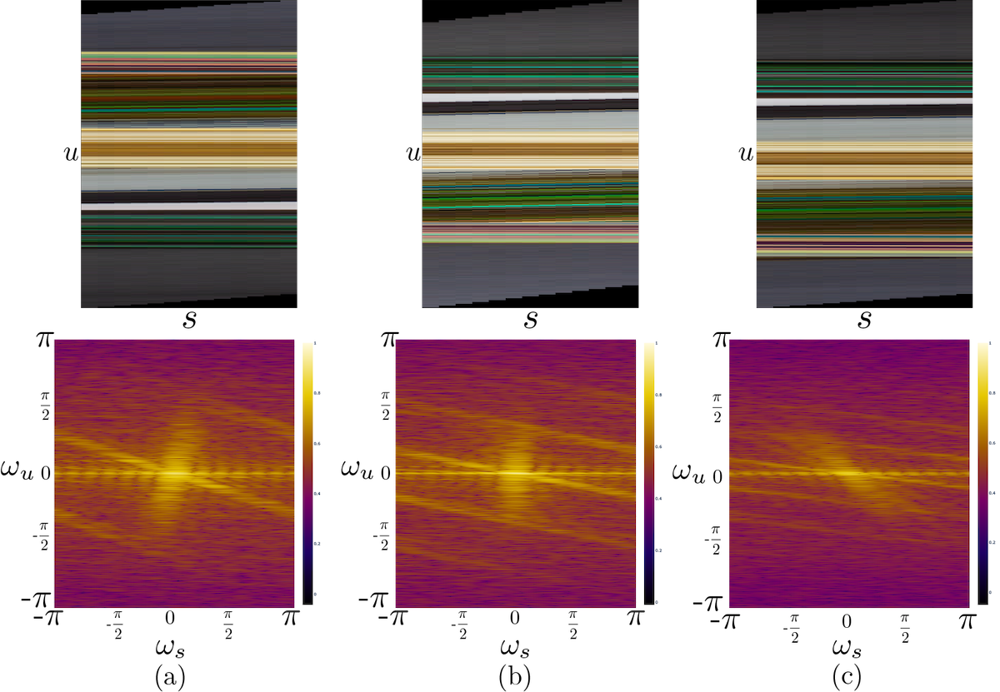

Camera Gantry
To gain a better understanding of how camera calibration affects light field imaging, and to develop a testbed for light field algorithm development, a light field camera gantry was constructed. A single DSLR camera is positioned on a platform and moved around to different positions on the plane to emulate a camera array. This works for testing in a laboratory where the scene is static over time and allows for high quality light field images to be captured at a lower cost than a camera array. It also allows for flexibility in the sampling rate on the plane, i.e., the spacing between sub-aperture views.
 
The camera gantry can travel 1.5 meters in each direction, allowing for light field images with a large field of view. The camera used, a Canon EOS 7D, has a resolution of , which allows for a high spatial resolution. The camera gantry is capable of movements as small as 0.025 millimeters, allowing for high angular resolution that may not be possible with a camera array.
Calibration
After capturing a light field image of size , an EPI is extracted from the center of the light field and its frequency domain is examined. This is done with a spacing of 3mm (a), 5mm (b), and 7mm (c) between sub-aperture views:

The spatial domain EPI shows lines of different slopes, indicating objects at different depths. However, it is not very clear where these depths lie in the frequency domain. Calibration is necessary to get a clear ROS in the frequency domain.
Calibration techniques similar to plane + parallax calibration are used to calibrate the camera gantry. A light field image of a checkerboard is captured, and corners of the checkerboard squares are detected and used for matching between sub-aperture views. Using the central sub-aperture view as a point of reference, all other sub-aperture views are warped such that the pixel locations of the checkerboard square corners are as close as possible across all views. This produces a clearer frequency domain ROS:
